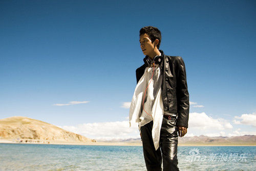

个人档案 姓名：旦曲阿帝 身高：178cm 体重：60kg 籍贯：西藏山南 民族：藏族旦曲阿帝 生日：6月8日 血型：ab型 星座：双子座 毕业院校：西藏大学 个人喜好：唱歌、打篮球 最喜爱的颜色：酷爱黑色 最喜爱的外国影片：《情字路上》《美国往事》 最喜爱的外国乐队：枪花乐队旦曲阿帝(4张) 最喜爱的运动：打篮球台球 最喜爱的食品：家乡牦牛肉干 最喜爱的动物：藏獒 最喜爱做的事：弹琴 才艺：吉他口琴词曲创作 音乐作品 《小鸟不哭》、《蔚蓝色的天》、《高原之恋》、《女人》、《真情拉萨》、《山里的湖》 心路历程 音乐启程“为音乐，为梦想，现在我才踏上音乐之路的征程。我会坚持梦想，谱写原创，把最动听的歌，最美妙的音符传递给所有喜欢歌唱的人。”2011中国藏歌会圆满落下帷幕，新生代创作型歌手旦曲阿帝以一首柔美而富有节奏的《高原之恋》获得本次大赛的第三名。 为音乐而生“高原上的人只要会说话，一定会唱歌；只要能走路，一定会跳舞！”在与旦曲阿帝的交流中，他很朴实地道出了这样一句形象藏族同胞音乐天赋的真实感言。正是由于得天独厚的高原生活，和周围人的耳染目睹，阿帝从小就喜欢上音乐，并且特别酷爱。随着年龄的长大，一晃进入大学，音乐也成为他生活中不可缺少的一部分。除了上课，耳机是随时随地带在身边的，由于受学校及外界的一些影响，他萌生了将传统藏歌和现代流行音乐融合的念头，年轻人的朝气和对梦想的执着，越发让他的潜能激发，并且付出了行动。2009年，旦曲阿帝上大二，在学习之余结识了几个有着共同音乐梦想的知己。一次次的思想碰撞和交流使大家的音乐梦想一触即发，随之“磐石乐队”诞生。组建乐队的日子，是坚辛而又值得回味的。因为大家都不是专业出生，只能自学成才，经过一段时间的磨合，最终确定了主音吉他、节奏吉他、扎念琴 、贝司、 鼓手的人选，旦曲阿帝的唱功当仁不让被选为乐队主唱。乐队虽然成立了，但其间经历酸甜苦辣、五味杂陈的事很多。当几个成员的父母得知他们组建乐队，怕影响正常学习，坚决反对时，他们纠结过；当组建乐队需要购买乐器没有钱时，他们气馁过；当周围人不理解，觉得他们是在浪费青春时，他们想过放弃。但心中的信念，骨子里的梦想，让他们一步一蹒跚地走了过来。在不断学习的同时，他们开始寻找创作的土壤。如：“倾听 我们的歌”、“故乡”、“树下天堂”......。经过大家的努力，乐队的影响力越来越大，父母也不再反对，周围人也对他们刮目相看。受到“2010年国际马拉松开幕式”演出邀请，同时，还参加了西藏一年一度最具影响力的“2010西藏现代音乐会”，获得“最佳创作歌曲奖”。 为梦想坚守和乐队共同成长的时间是快乐的，但好景不长，毕业将面临社会的挑战和选择。看着几个伙伴纷纷为自己的工作寻找下落，曾经象牙塔的美好生活，遇上现实的就业问题，再加上生存的基本需求，伙伴们都选择了最现实的生活。旦曲阿帝的父母也劝他放下音乐，努力考一个国家公务员的工作，也不枉费父母大半辈子的辛劳。面对双鬓也有几许皱纹的父母，旦曲阿帝突然感到心中的不安和失落。难道自己的音乐梦想就此搁浅么？“不，骨子里的梦想是不可以被生活所磨灭的！”经过近两个月的愁思，旦曲阿帝坚定了自己的信念，一定要为梦想而努力。他只身来到北京，开始维期半年的专业学习和培训。学习期间，他抛开所有的杂念，从自身的舞台表现力、唱功、舞蹈等各方面进行魔鬼式训练。“既然为梦想而来，就要为实现梦想奋斗。”他坚定地说，这个选择让我背负了太多的压力、太重的包袱，我不能让自己倒在“路上”。原来，阿帝一直崇拜“天杵乐队”，“因为他们的歌曲充溢着大自然的清新气息，但又不失激情摇滚的动感元素；让人能感受到辽阔草原的奔放，但又能体会到躺在大自然怀抱的浪漫和柔情。”说到偶像，旦曲阿帝更显出对音乐魅力的无限向往。虽然他还不知道自己未来的音乐之路是否成功，但他表示，将一直坚持自已的梦想，直到自己停止呼吸的那一刻！不知是老天倦顾还是冥冥之中的安排，今年由四川卫视与西藏卫视主办的“2011天籁之音中国藏歌会”开赛了。这个节目为所有热爱歌曲的藏族同胞搭建了一个极好的展示平台。为了让更多的人接受和喜欢拉萨本土原创音乐和新生代音乐，旦曲阿帝报名了参加比赛。他一改藏歌往日飘扬云霄的激昂，用其抒情浪漫充满诗意的音乐气质感染着现场所有观众，在一次次突围赛中他凭借超高的人气一路过关斩将喜获季军。其清新的演唱风格被作为评委的中国顶级音乐人严肃、容中尔甲、萨顶顶所赞赏，并获歌迷的推宠，有“藏版陈小春的”“藏族音乐王子”的美誉。容中尔甲对他给了最高的评价，称旦曲阿帝是在这个舞台上最想看到的和最想听到的声音，被评论为西藏本土音乐第一领军人、现当前中国藏族乐坛少有的创作型偶像歌手。 为艺术创作在与阿帝交谈中，他会时不时提到他的偶像，也许他们有一定的相似之处，都怀着一个创新音乐的思维。 他们同样对传统音乐文化提出了质疑，说：一首民歌，它可以用很多曲风，用多元化的元素来改变它，但是它实质的内容不会变。所以就跟人一样，穿衣服你想穿什么都可以，但主要的是信念、灵魂不变就行了。他们觉得一首民歌唱了几百年还是一种形式，就在不动原有的民歌基础上再加一些东西，就试着加了一些西方音乐形式和节奏，感觉不错。他们用摇滚的形式，从历史中出来，进入了自己的角色；他们用新的语汇，融进西藏的音乐，他们在这方面作了大胆尝试，也取得了大家的认可。阿帝也遭到过传统音乐人的质疑，认为他是在“糟踏民歌”、“东拼西凑”，但他并没有因此而停歇，依然坚持走自己的音乐之路。因为他觉得西藏是个神秘而又充满幻想的地方，那里会寻找到无限的音乐土壤，他能从中吸取的不仅是纯天然的民族文化，还有更多一山一水，一景一物，一事一理。那里会给自己提供用之不尽，取之不竭的创作灵感。“我要用最通俗的唱法，流行的节奏，朗朗上口的词汇，诠释藏族文化与汉族文化的和谐融合。”当说到以后的创作方向时，旦曲阿帝如实说，他会尝试着把现代流行音乐的元素，恰如其分地融合到传统藏歌当中，比如：寺庙里面的领经喇嘛，他会用一个很重的低音，这个声音很浑厚、共鸣性特别大，我们想把这个声音加进其它音乐中；打阿嘎歌，细细听的话，特别舒服，它是男女对唱，而且节奏又不一样，如果在那个点上配上我们的乐器和节奏的话，出来肯定有一个非常好的感觉。还有藏戏的说唱、朗姆塔也可以加进rap节奏……，让这些传统的民族歌曲，变成人人都能唱，都喜欢唱的民族融合新风格歌曲。 最新新闻 旦曲阿帝亮相《黄金时代》 与巫启贤同台飙歌受盛赞 由安徽卫视强力打造的《黄金年代》昨晚继续火爆上演，此次人气青年藏族歌手旦曲阿帝帅气亮相，现场演绎了一首《耶利亚女郎》。在这期节目中，他以一身帅气黑装亮相，外型俊朗的他将这首歌演绎的十分出彩，期间更与偶像巫启贤同台飙歌，受到偶像的盛赞，成为了当晚最为亮点的选手之一。 旦曲阿帝档案之历年MV 2013年歌曲MV：天边拉萨
ངེད་བོད་པ་ཚང་གི་བར་འཁྱམས།
>